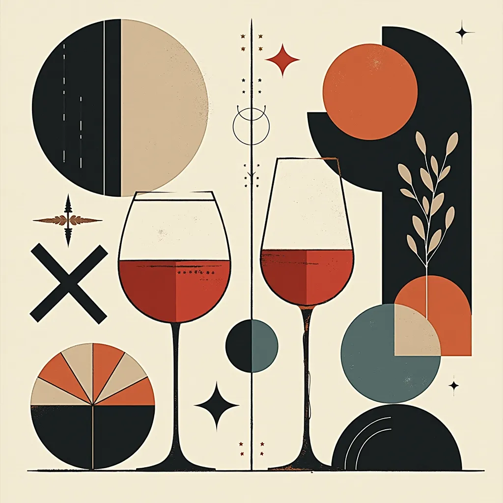
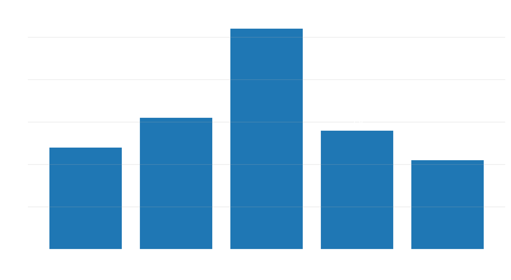
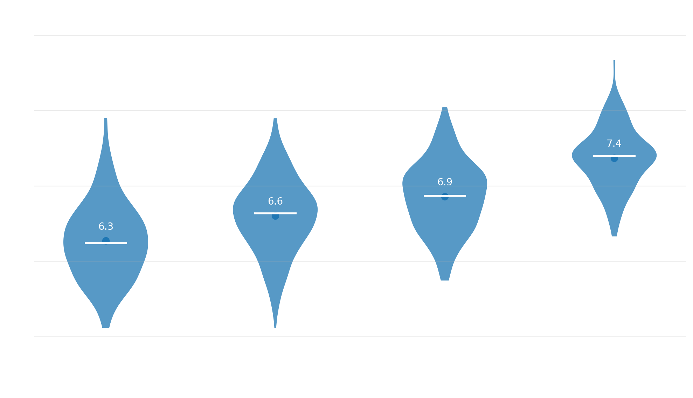
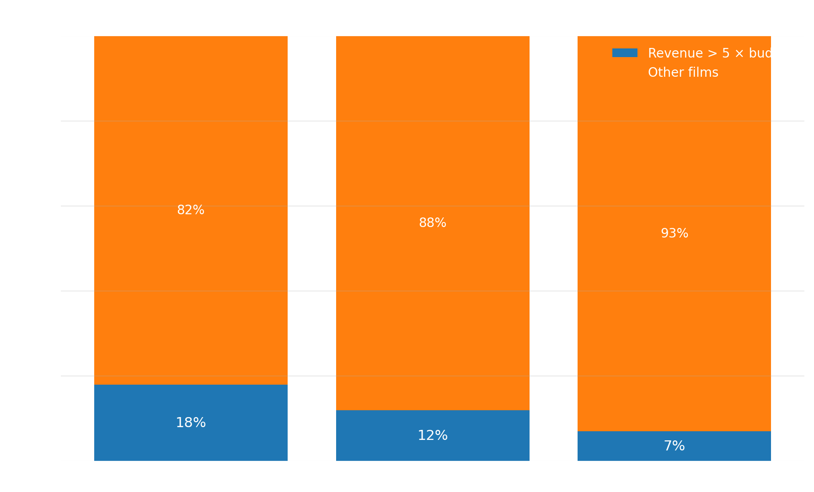
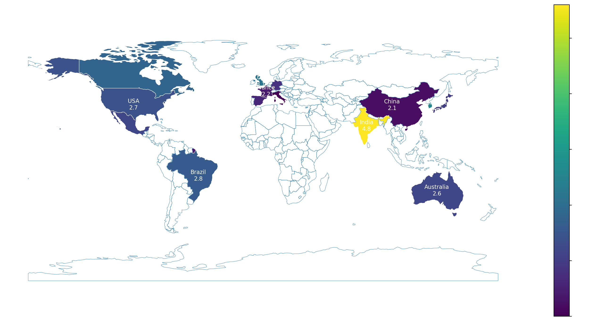
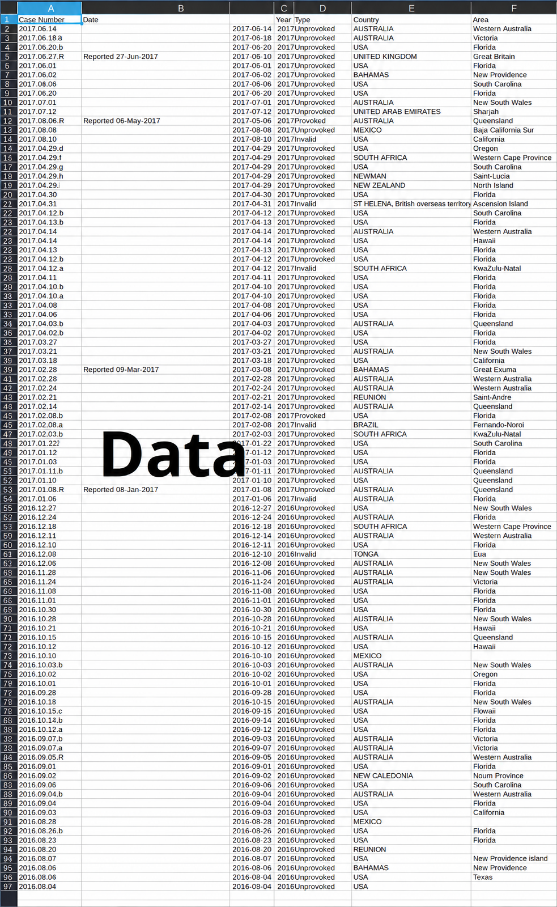
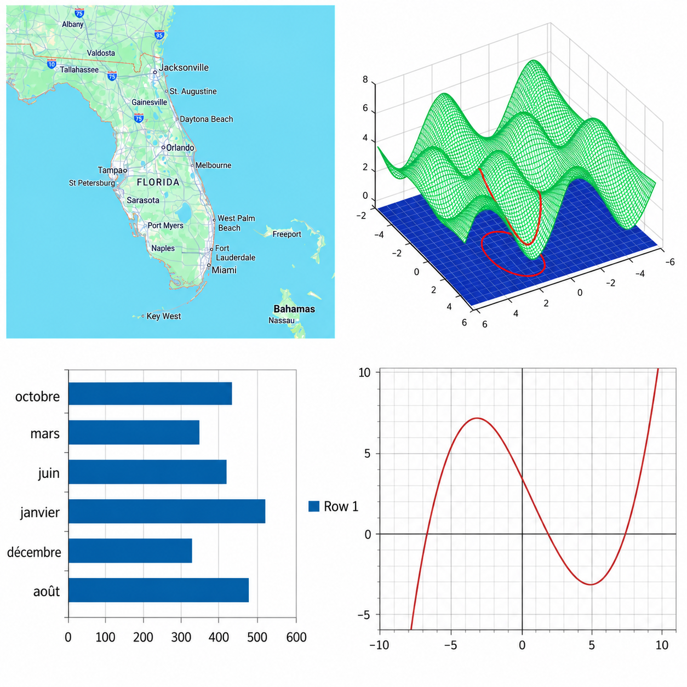
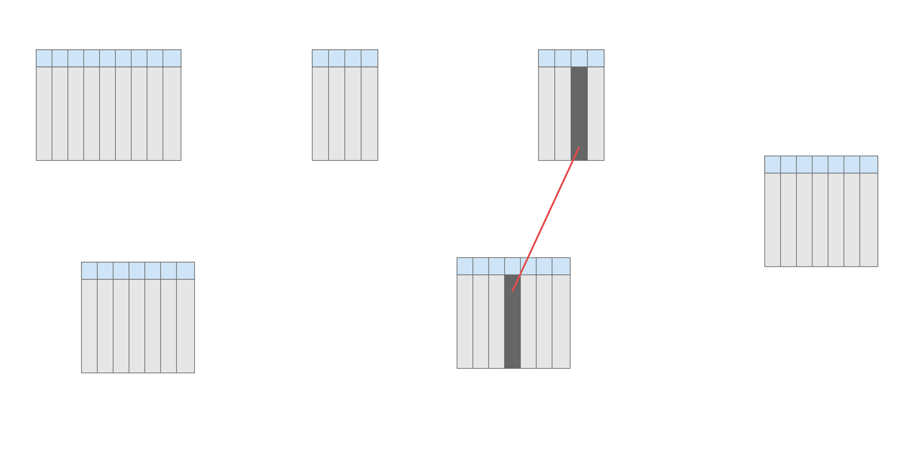
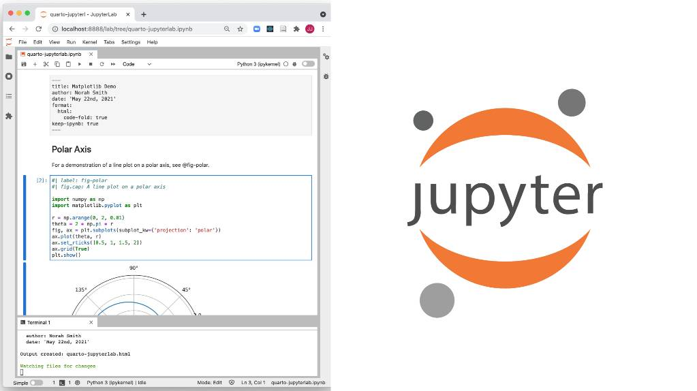

INTRODUCTION
BIG DATA
Big Data
Big Data ?
Pourquoi Big Data ≠ Data classique ?
Big Data = Beaucoup de données ?
Nop
Big Data, c’est quand :
changent la façon de penser les algorithmes
OK
2 TP non notés
499
Résolutions du nouvel
an 2015

2 TP non notés
499
Résolutions du nouvel
an 2015
TP1 Nettoyage du jeu de données
TP2 Analyse exploratoire
Monôme ou binôme
un projet
Choisissez un sujet qui vous intéresse
Analysez des données
et faites découvrir vos résultats aux autres !
Sujet libre — Monôme ou binôme
Écrit 2 pages maximum
Oral 5 QCM, 5 réponses possibles
5 minutes pour faire participer la classe !
À partir de votre analyse,
faites découvrir à vos camarades
5 résultats intéressants, surprenants
ou contre-intuitifs.
Chaque réponse doit être
justifiée par vos données.
Jean Bond
L3 en informatique
Sujet : Le cinéma et son financement
analyse de 12 000 films sortis entre 1990 et 2024,
avec leurs budgets, recettes, genres et leurs notes.
Dans notre analyse, le rapport médian entre recettes et budget est de 5,2 pour les films d’horreur, contre 2,4 pour les films d’action.
Les films d’horreur présentent donc un meilleur rendement relatif dans notre échantillon.

Dans notre analyse, les films sortis en décembre obtiennent une note moyenne de 7,3/10, contre 6,5/10 pour l’ensemble des films.

Les films de plus de 150 minutes obtiennent une note moyenne de 7,4/10, contre 6,3/10 pour ceux de moins de 90 minutes.
Cela ne signifie pas qu’allonger un film améliore sa qualité, mais qu’une relation existe dans notre échantillon.
À titre d’anecdote, le film le plus long jamais réalisé est Logistics (2012), un documentaire expérimental suédois de 857 heures, soit 35 jours et 17 heures !
(mais il n’a obtenu que 6,2/10)

Les notes médianes augmentent avec la catégorie de durée dans notre échantillon.
Les films les plus longs présentent les meilleures évaluations.
Dans notre analyse, 18 % des films à petit budget rapportent plus de cinq fois leur budget, contre seulement 7 % des films à gros budget.
Les films à petit budget présentent donc plus souvent un rendement relatif très élevé, même si leurs recettes absolues sont généralement inférieures.

recettes / budget pour chaque film.Dans notre analyse, les films produits en Inde présentent le meilleur rendement médian, avec un rapport recettes / budget de 4,8, contre 2,7 pour les États-Unis.
Autrement dit, les films indiens de notre échantillon génèrent généralement un meilleur rendement relatif, malgré des budgets souvent plus faibles.
Pourtant, c’est le film américain Avatar (2009) qui détient le record de recettes mondiales sur cette période, avec environ 2,9 milliards de dollars !

La carte montre que certains pays, malgré des recettes absolues moins élevées, peuvent présenter un meilleur rendement relatif.
recettes / budget pour chaque film.Vous n’aurez que 5min par groupe
😀
Big ?
Data ?
Data
= Observation encodée
Data = Observation encodée
Ok mais data = information ?
Nop
Data ≠ information
Information = interprétation utile
Qu’est-ce que l’information ?
“ Action de donner une forme à quelque chose ”
Data
Information
≠
=
=
information
interprétation utile
Structure extraite à partir d’un ensemble de données
Data = Observation encodée
Information = interprétation utile
Et pour finir
Information = connaissance ?
Nop
Data = Observation encodée
Information = interprétation utile
Connaissance = information intégrée
= capacité potentielle d’en tirer profit
= Potentiel d’action / d’agir sur le monde
donnée = Observation encodée
information = Interprétation utile
connaissance = Potentiel d’action
OK
Cas pratique

Base de données sur les attaques de requins au cours des 100 dernières années
OK mais et alors ?
Informations

Connaissance
Si vous surfez en octobre, l’après-midi, sur la plage de New Smyrna Beach, en Floride, vous avez plus de chances de finir en confit de canard pour requin que de prendre une bonne vague.
Théorie de l’information de Claude Shannon
Cas pratique
?
Is a branch of computer science where we study how to store, use and analyse data for deriving information from it.
Le nettoyage des données
Ce n’est pas une étape mécanique,
mais une étape de réflexion
il faut rendre les données exploitables
Selon la question d’analyse retenue, certaines variables peuvent être conservées, transformées ou écartées.
Toute décision est acceptable à condition d’être cohérente avec l’objectif de l’analyse et explicitement justifiée.

| Valeur d’origine | Problème détecté |
|---|---|
| ATLANTA | Casse incohérente |
| Orlando, Florida – Sunshine State | Texte parasite |
| ‰Û¢detroit‰Û¢ | Problème d’encodage |
| mn | Abréviation ambiguë |
| Hello Company – San Diego | Texte non géographique |
| Brookhaven / Chester Heights | Plusieurs villes |
| Valeur d’origine | Après nettoyage |
|---|---|
| ATLANTA | Atlanta |
| Orlando, Florida – Sunshine State | Orlando |
| ‰Û¢detroit‰Û¢ | Detroit |
| mn | Minnesota |
| Hello Company – San Diego | San Diego |
| Brookhaven / Chester Heights | Brookhaven |
🐍 Python 🐍
Pourquoi le langage Python ?
Python
= haut niveau d’abstraction
Python
= quoi ?
On va travailler avec
IPython
Interactive Python

Qu’avons-nous appris ?
Une donnée est une observation.
Une information est une interprétation.
Une connaissance permet de comprendre et d’agir.
Votre projet consiste à
Transformer des données
en connaissances
et à les transmettre aux autres.
Mais avant de produire une connaissance…
il faut apprendre à
comprendre et nettoyer les données.
TP1
C’est tout
pour aujourd’hui
Comment avons-nous obtenu ce résultat ?
Cette différence pourrait notamment s’expliquer par la concentration de films visant les récompenses de fin d’année.